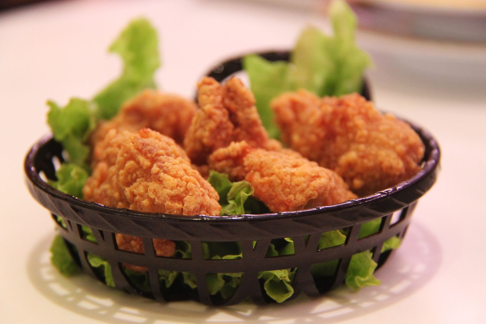

Atascocita, Texas
“Yum, yum — come get you some.”
Fried catfish and shrimp from a longtime Atascocita favorite. Call ahead or stop by on Pearson Lane.
4.6 on Google · 835 reviews
Raymond Goldsmith opened Southern Style Seafood Company in September 2014, leaving a career in oilfield services to cook Louisiana-style seafood for the Lake Houston area. A 2018 Community Impact profile described a food trailer at the corner of Atascocita and Pearson roads, with a steady line of cars from open to close.
Reviews often mention the owner as Roy — friendly, proud of the food, and quick with a sample. The most popular order, Goldsmith told Community Impact, is the No. 7 combination plate: four pieces of fish, four shrimp, french fries, and hush puppies.

4622 Pearson Lane, Suite 4620
Atascocita, TX 77346
Yelp lists take-out, outdoor seating, and that the spot is good for kids. Health score reported on Yelp: 96 out of 100.
| Day | Hours |
|---|---|
| Monday | 10:30 AM – 8:30 PM |
| Tuesday | 10:30 AM – 8:30 PM |
| Wednesday | 10:30 AM – 8:30 PM |
| Thursday | 10:30 AM – 8:30 PM |
| Friday | 10:30 AM – 9:00 PM |
| Saturday | 10:30 AM – 9:00 PM |
| Sunday | 10:30 AM – 8:30 PM |
Hours as shown on current Google, Yelp, and Facebook listings.
Quoted from public reviews. First names only.
“Large portion and truly southern style fried fish, was a tad over cooked on the edges. Tasty, and fried okra good too. Loved the hush puppies, wish it came with more than 2! Will go back! Made to order!”
“Great food and Roy can sure dish it out. Best hushpuppies ever! Even better than mine and that’s saying something. Everything was delicious and on point! Thanks Roy! We totally enjoyed and will definitely be back.”
“Hands down my favorite spot, I’ve had their fried catfish, shrimp, boudin balls, hush puppies, and Po’Boys . And best I’ve tried so far. So when im in the area, i make sure to stop and get some of that Southern Style Seafood. The owner and operator Roy aswome guy. If you are in the area make sure to stop by and get u some.”
“I am addicted to this place! The friend Catfish is amazing! They have fantastically large portions too! The guy that runs it is super friendly as well. I love coming here!”